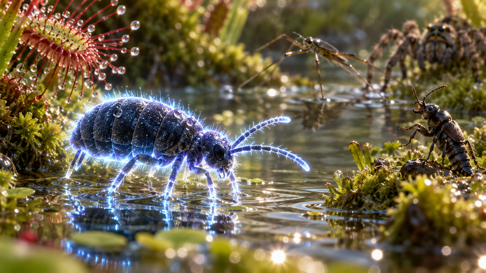
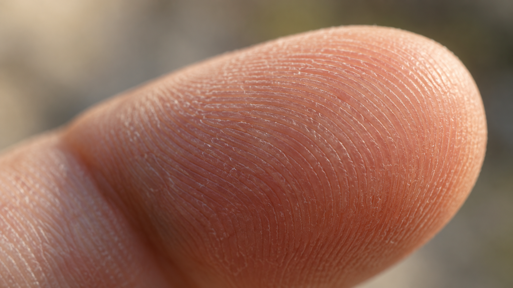
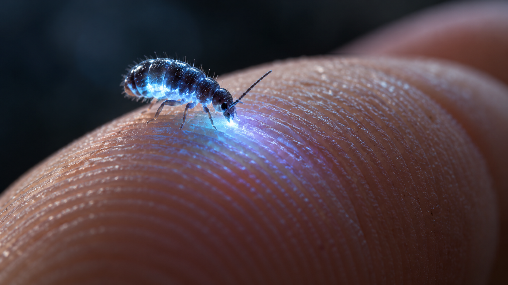

A glowing return journey.
Design plan and generated concept references · 31 October 2026 · Future sequence, not implemented.
Temporary Phage ending
At the end of the Phage world, show “Work in progress” with “Return to menu” and “Continue playing Phage”.
Proposed sequence
- The phages evolve into a glowing super phage.
- Passing the Phage stage shows the super phage exploding celebratorially across various cells.
- The journey then reverses through the worlds. Each creature has the implicitly enabled super-gene: it glows and is more powerful on its board.
- The final board features a glowing springtail that can defeat all its enemies handily.
- The ending shows that springtail jumping onto a person’s fingertip, biting them, and transferring the super-gene to them.
Phage → Bacterium → Paramecium → Amoeba → Tardigrade → Mite → Springtail → Fingertip ending
How the power is communicated
Do not explain the super-gene. Show it through the creature’s glow and increased power. Carry that visual idea through the reverse journey and the fingertip transfer.
Visual references
Generated with the built-in image_gen tool for reviewing the proposed sequence. The fingertip plate is a separate macro environment reference for the ending. Exact prompts, file paths and image checksums are recorded in the request ledger and image manifest.






